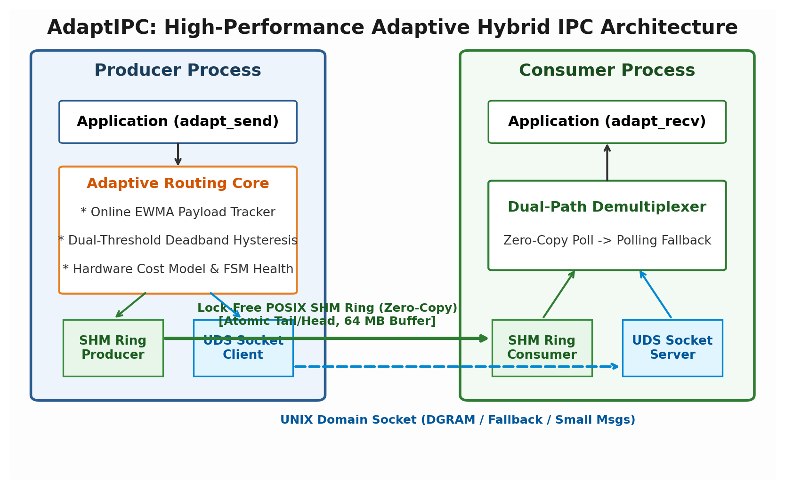
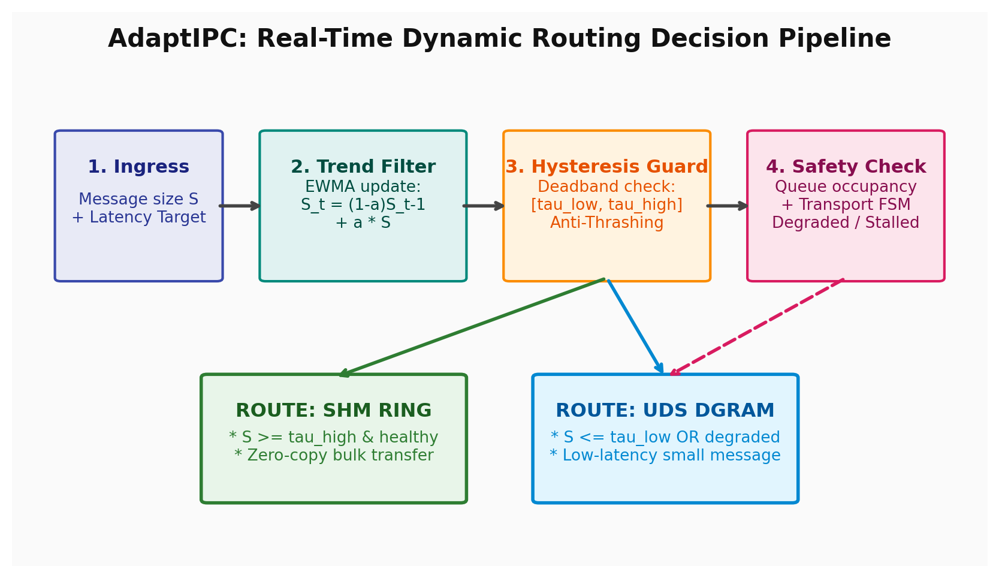
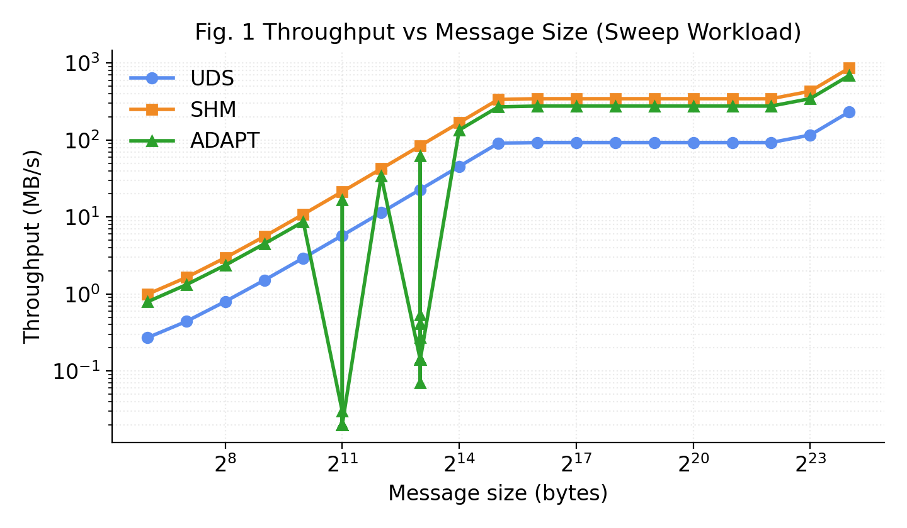
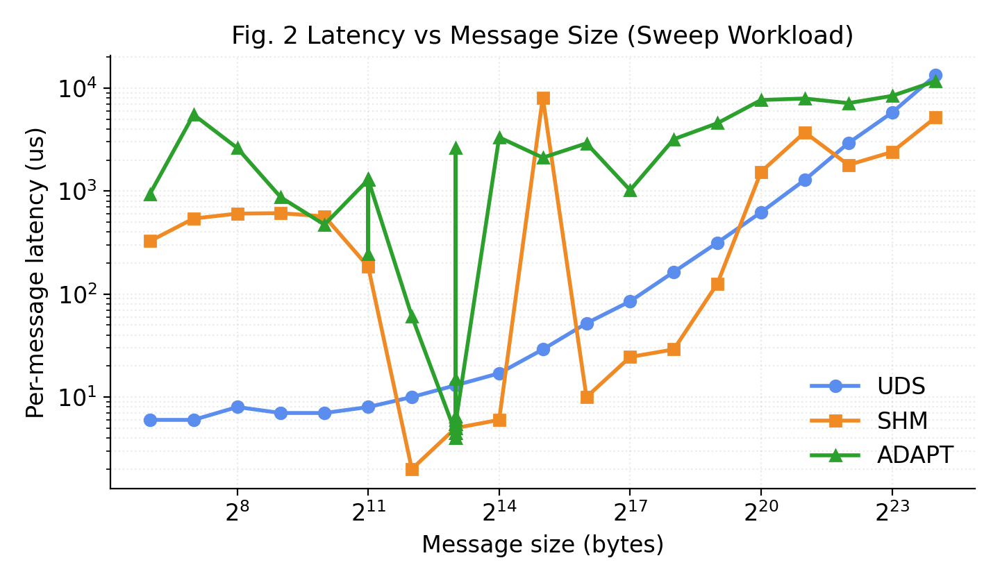
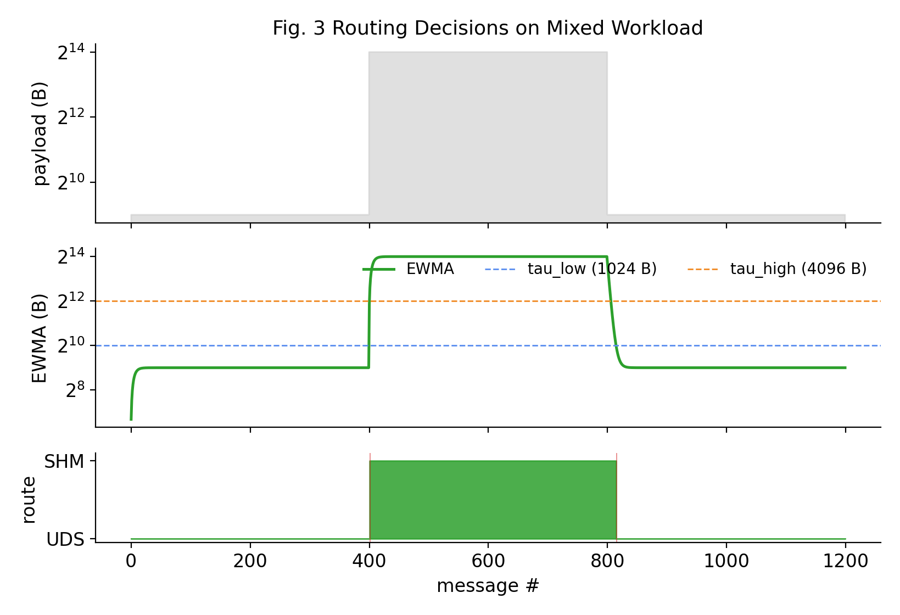
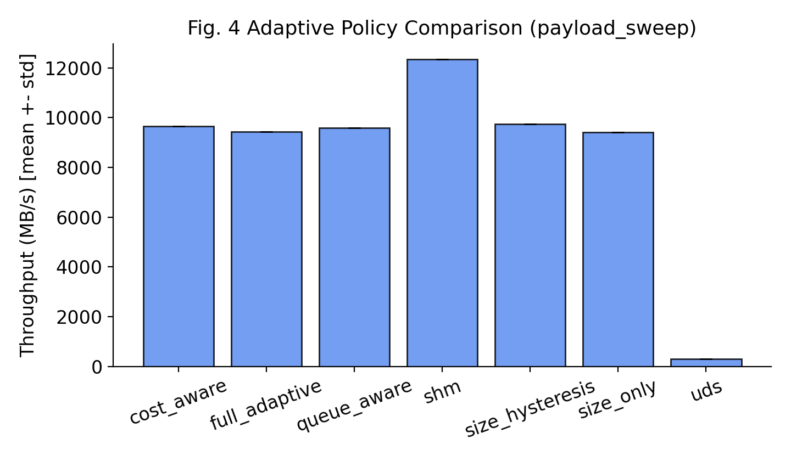
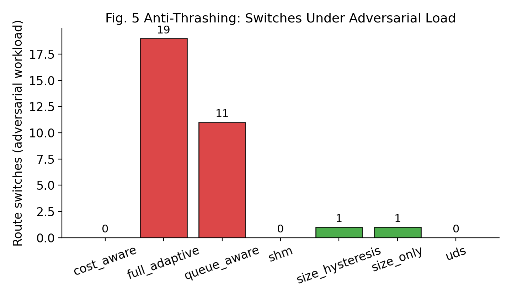
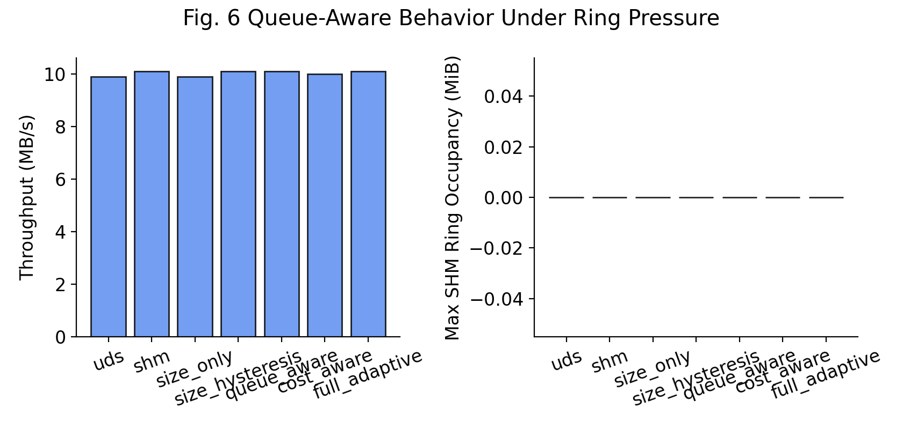

Empirical performance evaluation, real-time routing telemetry, and zero-copy shared memory architecture on modern POSIX systems.


Decisions below were emitted by showcase/decision_log.c linked against the real AdaptIPC library (libadaptipc) without mocks.
| Seq | Payload | EWMA | Active Route | Switch Event | SHM Cost (μs) | UDS Cost (μs) | Ring Occ. | Decision Reason |
|---|---|---|---|---|---|---|---|---|
| Loading telemetry trace... | ||||||||
Press Play to replay the captured decision stream message-by-message. Each frame shows the live EWMA, queue occupancy, per-transport cost model estimates, and the router's stated reason — all emitted by the real library.

Sweep from 64 B to 16 MB. AdaptIPC tracks SHM at bulk sizes and avoids UDS copy overhead.

Sub-microsecond latency for small messages; linear memory-bandwidth scaling on bulk payloads.

Workload transition across control → bulk → control traffic classes showing smooth transitions.

Throughput comparison across static UDS, static SHM, size-only heuristic, and full adaptive policy.

Route flap elimination under alternating adversarial boundary workloads.

Graceful shedding to UDS when consumer ring occupancy exceeds watermark threshold.
# 1. Interactive CLI Demo with Live Progress Bar
./scripts/demo.sh
# 2. Professor / Reviewer Automated Showcase (Generates REPORT.md)
./scripts/professor_demo.sh
# 3. Master Showcase Regeneration (Builds C harnesses, regenerates figures & diagrams)
./scripts/generate_showcase.sh
# 4. Baseline Correctness Suite (10/10 test suites)
./demo/adaptipc_lab.sh -experiment correctness